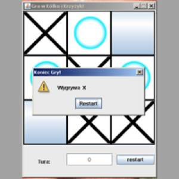

<div class="container-fluid r">
  <div class="row">
    <div class="col-sm-12 headout p-3 mb-lg-5 mb-2">
      <h1 class="headers">Projects</h1>
    </div>
<app-filter #filterchild></app-filter>
<div class="container p-3">
  <div class="row" *ngIf="projects && projects.length > 0; else NoProjects">
  <div class="col-md-5 col-sm-12 smallprojects position-relative m-3" *ngFor="let project of projects | myfilter: filters" [ngStyle]="{'background-image':' url(' + project.img_url + ')'}">
    <!-- -->
    <i class="fas fa-search c-pointer" (click)="CreateDynamicDataComponent(project)"></i>
    <div class="myposition position-absolute"><p class="inside text-white text-center">{{project.shortdescription}}</p></div>
  </div>
    <div class="col-sm-12">
      <p class="p-lg-5 p-md-3 p-1 addtab text-center">This tab will be edited with the appearance of new projects made by me.
        Everything in the above projects was invented and written by me.</p>
    </div>
  </div>
  <ng-template #templateDetails></ng-template>
  <ng-template #NoProjects><h2>Something went wrong! Let's try once again!</h2></ng-template>
</div>
</div>
</div>
